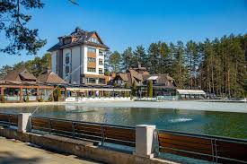

Beograd je glavni grad Srbije i jedan od najposećenijih gradova u regionu. Poznat je po Kalemegdanu, reci Dunav i bogatom noćnom životu.
Zlatibor je poznata planina u Srbiji koja privlači veliki broj turista tokom cele godine zbog prirode i čistog vazduha.

| Mesto | Grad |
|---|---|
| Kalemegdan | Beograd |
| Tornik | Zlatibor |